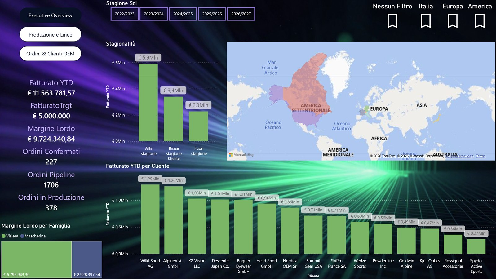

Power BI dashboard
Revenue, OEE, downtime and deliveries on the same page. Take the guided tour of the report and use the filters: in a few clicks you see where production stops.
Explore the reportDashboards, spreadsheets and AI assistants designed for the daily work of a manufacturing SME, on fictitious data. Pick one and step inside: see how it works and what it could change in your day.

Revenue, OEE, downtime and deliveries on the same page. Take the guided tour of the report and use the filters: in a few clicks you see where production stops.
Explore the reportEvery quote comes from the same price lists and formulas, without copying data: see how it works.
Open the workbookAsk a question about a contract: the answer comes with the clause behind it, so you can check it right away.
Talk to the assistantThe GDPR, the AI Act and the Garante's guidelines without getting lost in long texts: every answer cites its source, and checking it remains with a person.
Put the sources to the testBefore the use cases come real projects, on the factory floor and in the office: apps connected to machines, data turned into decisions, system migrations. Clients and names stay confidential: here you find what I did, how it works and why it could matter to you too.
When components are valuable, knowing how many remain against production orders is something you need straight away, not at the end of the shift.
What I didA machine, a factory system and a simple app can talk to each other: the same pattern applies wherever a manual check slows production down.
Ideas from the people who work on processes every day can get lost if they have no place to land and nobody reading them.
What I didPeople sign in with their company account, no new passwords: less friction for those writing, tidy data for those deciding.
Maintenance, costs and certifications of an asset often live in different places, and a forgotten deadline shows up when it is too late.
What I didA single record for each asset and alerts that go out by themselves: a light tool, within reach of an SME too.
Factory data and business data are born in separate systems. Until they meet, each department tells its own version of the figures.
What I didBefore any chart comes the right question: translating people's needs into readable data is the piece that makes everything else work.
A report prepared by hand arrives late and costs its author time. Management needs a summary, the team needs the detail.
What I didOne source, two reading levels: from the worrying figure to the row that explains it in one click.
Requirements, certifications and renewals involve several departments. Without a shared view, knowing where you stand becomes a round of emails.
What I didAny obligation with a deadline can sit in one view: who has to do what, by when, and what is coming up.